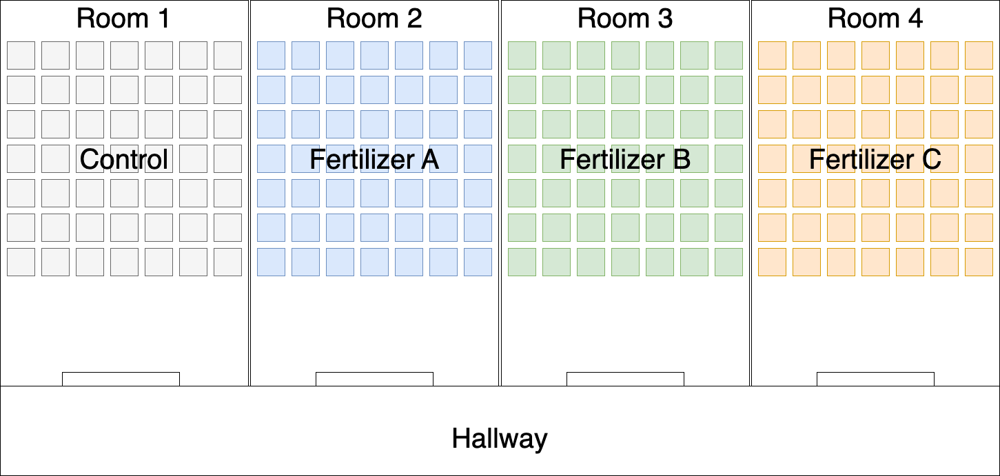

library(tidyverse)
library(infer)Computational methods of inference
Get RStudio setup
Each time you start a new exercise, you should:
- Make a new folder in your course folder for the exercise (e.g.
bioc13/exercise_2) - Open RStudio
- If you haven’t closed RStudio since the last exercise, I recommend you close it and then re-open it. If it asks if you want to save your R Session data, choose no.
- Set your working directory by going to Session -> Set working directory -> Choose directory, then navigate to the folder you just made for this exercise.
- Create a new Rmarkdown document (File -> New file -> R markdown..). Give it a clear title.
Please ensure you have followed the step above before you start!
Effect of fertilizer application on crop growth
Some researchers at Lund University want to understand the effectiveness of three fertilizers on promoting crop growth. To do that, they construct 7 x 7 experimental arrays of plant pots for each treatment (Figure 1). Each experimental array is kept in a seperate green house chamber (room). The control pots were filled with a standardised soil mixture. The treatment plots were filled with the same standardised soil mixture plus the addition of the fertilizer. Already germinated seedlings were randomly assigned to pots and planted. Plants were kept in the greenhouses, and watered regularly.

After 30 days, the researchers used a knife to cut all of the plant’s biomass that was above ground. Using an oven, they dried each plant for 24 hours before recording the mass in grams using a balance.
The results of the experiment are stored in a csv file here: Link to data.
Once downloaded, you should move it to your working directory folder for this exercise before continuing.
Loading R packages
If you installed the R packages from the last session, you do not need to reinstall them, only load them into our current R environment. We use the library() function to do that. Since we need this code to run every time we come back to this RMarkdown document, we should write it in the document. R code should always be executed “top to bottom”, so this bit of code should come right at the start.
Make a code cell and use the library() function to load the tidyverse and infer packages:
Loading your data
We will now load the crop_growth.csv data file that you downloaded earlier.
Make another code cell. Load the crop_growth.csv data file using the read_csv() function and assign it to an object named crop_data.
1crop_data <- read_csv("crop_growth.csv")- 1
- Be sure to use quote marks around the file name.
Explore the data
In your RMarkdown document, using text below the code cell, answer the following questions:
- How many rows of data are in the dataset?
- What is the unit of observation in this dataset? In other words, what does each row represent?
- What populations (statistical use of the word) could we make inferences about using this data?
- What is the minimum and maximum
dry_mass_gthe researchers recorded?
Plot the data
Below I have provided you with the base ggplot() function, but you need to add a geom_ to it.
crop_data |>
1 ggplot(aes(x = treatment, y = dry_mass_g))- 1
-
To add some geometry add a
+to the end of this line, then copy thegeom_onto the next line
Some examples geometries could be:
geom_boxplot()geom_violin()geom_jitter(width = 0.1)Try them out. You can also add more than one geom_ to a plot.
Calculating the observed statistic
Our research question is:
- Is there a difference in mean
dry_mass_gbetweentreatmentgroups?
Since we have more than two groups, this sort of analysis is called an ANOVA (ANalysis Of VAriance). Specifically, it is a one-way ANOVA, as we are interested in the effect of one categorical variable (with >2 groups) on a continuous variable.
In your RMarkdown document, using text below the code cell, answer the following questions:
- State the null and alternative hypothesis.
- What is the test statistic we use in an ANOVA?
In a new code cell, calculate the observed test statistic
Calculating confidence intervals

There is absolutely nothing stopping you from calculating a cofidence interval for the statistic used in an ANOVA (try it if you want using code from the previous exercise), but in practise they can be hard to interpret. So for now, we will move straight to testing the null-hypothesis.
Testing against the null hypothesis

Generating a null distribution
In a new code cell, generate a null distribution using the code below:
null_dist <-
1 ______ |>
2 specify(response = ______, explanatory = ______) |>
3 hypothesize(null = "independence") |>
4 generate(reps = 10000, type = "permute") |>
5 calculate(stat = "______")- 1
- The name of the dataset.
- 2
- Specify which is your response and explanatory variable.
- 3
- Our hypothesis is that our response variable is independant of our explanatory variable.
- 4
- Simulate data using permuations. This may take a few seconds to minutes depending on your computer.
- 5
- From each of our simulated permutation samples, calculate the test statistic.
Compare your observed against the null
In a new code cell, plot the null distribution and the observed statistic using the code below:
null_dist |>
1 visualise(bins = 15) +
2 shade_p_value(obs_stat = obs_stat, direction = "greater") +
3 labs(x = "______ statistic")- 1
-
Pipe your
null_distobject intovisualise(). You can change the number of bins if you wish. - 2
-
Plot your
observed_stat, and specify that the direction should be greater. Our statistic is naturally bounded at 0. - 3
- You can change the axis labels to make the plot more clear.
Calculate a p-value
In a new code cell, use your null distribution to calculate a p-value:
null_dist |>
get_p_value(obs_stat = obs_stat, direction = "greater")Writing your conclusions
In your RMarkdown document, using text below the code cell, answer the following question:
What are your conclusions? State them both clearly in terms of the research question and null hypothesis. How would you describe them to someone who does not know much about statistics?
Has public opinion changed since the last election?
In the last general election, the red party recieved 38% of the vote, the blue party recieved 34% of the vote, the green party recieved 18% of the vote, the yellow party recieved 8% of the vote, and the purple party recieved 2%.
| Party | Vote Percentage in Last Election |
|---|---|
| Red | 38% |
| Blue | 34% |
| Green | 18% |
| Yellow | 8% |
| Purple | 2% |
In a recent opinion poll, 300 people were asked who they would vote tomorrow if there was an election.
The data from that opinion poll can be found here.
Loading the data
Download the data file. Once downloaded, you should move it to your working directory folder for this exercise before continuing.
Make another code cell. Load the poll_results.csv data file using the read_csv() function and assign it to an object named crop_data.
1poll_data <- read_csv("poll_results.csv")- 1
- Be sure to use quote marks around the file name.
Explore the data
In your RMarkdown document, using text below the code cell, answer the following questions:
- How many rows of data are in the dataset?
- What is the unit of observation in this dataset? In other words, what does each row represent?
- What populations (statistical use of the word) could we make inferences about using this data?
Plot the data
Try and figure out how you would use ggplot() and geom_bar() to plot this dataset. Use any resources you like!
Calculating the observed statistic
The research question is:
- Has public opinion changed since the last election?
In your RMarkdown document, using text below the code cell, answer the following questions:
- State the null and alternative hypothesis.
- Use the slides to help you decide what statistic would help you answer this question. What test statistic will you use? Why?
In a new code cell, calculate the observed test statistic
obs_stat <-
1 _____ |>
2 specify(response = _____) |>
hypothesize(
3 null = "point",
p = c(
4 "______" = ______,
"______" = ______,
"______" = ______,
"______" = ______,
"______" = ______
)
) |>
5 calculate(stat = "______")
6obs_stat- 1
- The name of the dataset.
- 2
- Specify which is your response variable.
- 3
-
The specific test statistic we want to use requires us to provide our null hypothesis. In this example, we want to know if the proportion of each group in the response variable is different from a hypothesised proportion, so we use
point. - 4
- Here we need to put in our expected or hypothesised proportions under the null hypothesis.
- 5
-
Calculate the observed statistic. To see the possible names you can use, write
?calculateto open the help files for that function. - 6
- Print the observe statistic to the console.
Calculating confidence intervals
Again, there is absolutely nothing stopping you from calculating a confidence interval for the statistic you used (try it if you want using code from the previous exercise), but in practise they can be hard to interpret. So for now, we will move straight to testing the null-hypothesis.
Testing against the null hypothesis
Generating a null distribution
In a new code cell, generate a null distribution using "draw" and the code below:
null_dist <-
1 _____ |>
2 specify(response = _____) |>
hypothesize(
3 null = "point",
p = c(
4 "______" = ______,
"______" = ______,
"______" = ______,
"______" = ______,
"______" = ______
)
) |>
5 generate(reps = 10000, type = "draw") |>
6 calculate(stat = "______")- 1
- The name of the dataset.
- 2
- Specify your response variable.
- 3
-
In this example, we want to know if the proportion of each group in the response variable is different from a hypothesised proportion, so we use
point. - 4
- Here we need to put in our expected or hypothesised proportions under the null hypothesis.
- 5
-
Simulate data using
draw - 6
- From each of our simulated samples, calculate the test statistic.
Compare your observed against the null
In a new code cell, plot the null distribution and the observed statistic using the code below:
null_dist |>
1 visualise(bins = 15) +
2 shade_p_value(obs_stat = obs_stat, direction = "greater") +
3 labs(x = "______ statistic")- 1
-
Pipe your
null_distobject intovisualise(). You can change the number of bins if you wish. - 2
-
Plot your
observed_stat, and specify that the direction should be greater. Our statistic is naturally bounded at 0. - 3
- You can change the axis labels to make the plot more clear.
Calculate a p-value
In a new code cell, use your null distribution to calculate a p-value:
null_dist |>
get_p_value(obs_stat = obs_stat, direction = "greater")Writing your conclusions
In your RMarkdown document, using text below the code cell, answer the following question:
What are your conclusions? State them both clearly in terms of the research question and null hypothesis. How would you describe them to someone who does not know much about statistics?
Bergmann’s rule

The Atlantic marsh fiddler crab, Minuca pugnax, lives in salt marshes throughout the eastern coast of the United States. Historically, M. pugnax were distributed from northern Florida to Cape Cod, Massachusetts, but like other species have expanded their range northward due to ocean warming.
The pie_crab.csv dataset is from a study by Johnson and colleagues at the Plum Island Ecosystem Long Term Ecological Research site.
You can download the dataset here.
Data sampling overview:
- 13 marshes were sampled on the Atlantic coast of the United States in summer 2016
- Spanning > 12 degrees of latitude, from northeast Florida to northeast Massachusetts
- Between 25 and 37 adult male fiddler crabs were collected, and their carapace size (mm) recorded
The dataset was collected to test Bergmann’s rule:
One of the best-known patterns in biogeography is Bergmann’s rule. It predicts that organisms at higher latitudes are larger than ones at lower latitudes. Many organisms follow Bergmann’s rule, including insects, birds, snakes, marine invertebrates, and terrestrial and marine mammals (Johnson et al. 2019).
Loading the data
Download the data file. Once downloaded, you should move it to your working directory folder for this exercise before continuing.
Make another code cell. Load the pie_crab.csv data file using the read_csv() function and assign it to an object named pie_crab.
1pie_crab <- read_csv("pie_crab.csv")- 1
- Be sure to use quote marks around the file name.
Explore the data
In your RMarkdown document, using text below the code cell, answer the following questions:
- How many rows of data are in the dataset?
- What is the unit of observation in this dataset? In other words, what does each row represent?
- What populations (statistical use of the word) could we make inferences about using this data?
Plot the data
Try and figure out how you would use ggplot() and geom_point() to plot latitude and size in this dataset. Use any resources you like!
Calculating the observed statistic
The research question is:
- Does Minuca pugnax follow Bergmann’s rule?
In your RMarkdown document, using text below the code cell, answer the following questions:
- State the null and alternative hypothesis.
- Use the slides to help you decide what statistic would help you answer this question. What test statistic will you use? Why?
In a new code cell, calculate the observed test statistic
Calculating confidence intervals
This statistic lends itself well to interpretable confidence intervals.
In a new code cell, calculate the 95% CI for the test statistic
______ <-
1 ______ |>
2 specify(______ ~ ______) |>
3 generate(reps = ______, type = "______") |>
4 calculate(stat = "______")
5percentile_ci <- get_ci(______, type = "______", level = ______)
6percentile_ci- 1
- The name of the dataset.
- 2
-
A formula in the form of
dependant ~ independant(order does not matter for a correlation) - 3
- Decide how you will generate a datasets to use in your sampling distribution.
- 4
- Calculate the statistic for each sample to make a sampling distribution.
- 5
- Use your sampling distribution object to calculate the confidence internals
- 6
- Print the CI
Testing against the null hypothesis
Generating a null distribution
In a new code cell, generate a null distribution using the code below:
______ <-
1 ______ |>
2 specify(______ ~ ______) |>
3 hypothesize(null = "______") |>
4 generate(reps = ______, type = "______") |>
5 calculate(stat = "______")- 1
- The name of the dataset.
- 2
-
A formula in the form of
dependant ~ independant(order does not matter for a correlation) - 3
- What is your null hypothesis?
- 4
- Decide how you will generate a datasets under your null hypothesis to use in your null distribution.
- 5
- Calculate the statistic for each sample to make a sampling distribution.
Compare your observed against the null
In a new code cell, plot the null distribution and the observed statistic using the code below:
______ |>
visualise() +
shade_p_value(obs_stat = ______, direction = "______") +
labs(x = "______")Calculate a p-value
In a new code cell, use your null distribution to calculate a p-value:
______ |>
get_p_value(obs_stat = ______, direction = "______")Writing your conclusions
In your RMarkdown document, using text below the code cell, answer the following question:
What are your conclusions? State them both clearly in terms of the research question and null hypothesis. How would you describe them to someone who does not know much about statistics?